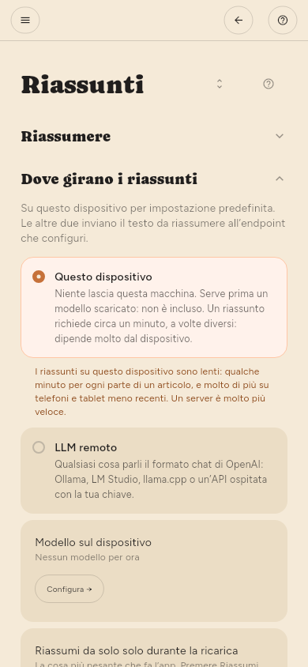

← Lettura · Indice · Trovare le cose →
Riassunti
Dove avviene il riassunto
Configurazione › Base › Riassunti › Dove girano i riassunti.
- Questo dispositivo: un modello che scarichi. Niente esce dalla macchina. È più lento e consuma batteria: qualche minuto per ogni parte di un articolo, e molto di più su telefoni e tablet meno recenti.
- LLM remoto: il tuo server, oppure un’API cloud. Più veloce, costa denaro ed è l’unico caso in cui il testo di un articolo va da qualche parte.
Ciascuno ha la sua pagina in Avanzate: Modello sul dispositivo per questo dispositivo, Server LLM per un server. Entrambe le pagine ci sono sempre; quella non in uso lo dice in cima.

Scegliere un modello
Configurazione › Avanzate › Modello sul dispositivo › Trova un modello. Cerca, apri le Varianti di un risultato per vedere i file che contiene (si differenziano per dimensione, ed è la dimensione a decidere se uno ci sta) e scarica quello che vuoi.
Configurazione › Avanzate › Modello sul dispositivo › Questo hardware mostra il processore, la GPU, quanta memoria hanno e usano il dispositivo e la sua GPU, e quanta ne occupa SummaReader, riletti ogni tre secondi; Copia li mette negli appunti. Quale modello e quale finestra di contesto ci stanno dipende da questi numeri.
I modelli scaricati sono elencati in Configurazione › Avanzate › Modello sul dispositivo › Modelli su questo dispositivo. Avvia ne carica uno e lo rende il modello che risponde: avviarlo è il modo di sceglierlo. Ne gira solo uno alla volta, quindi avviarne un altro chiede prima conferma: il modello in memoria deve uscire prima che arrivi il successivo. La scelta viene ricordata, e Caricalo all’avvio dell’app lo riporta da solo. Elimina toglie insieme i file e la riga. La riga di ogni modello scaricato dice anche quanta memoria gli serve, all’incirca, con la finestra di contesto e la dimensione delle sezioni impostate sotto, e cambia quando le cambi. Dopo che un modello ha girato, la sua riga dice anche quanto ha usato davvero: per un modello GGUF, che viene caricato solo mentre riassume, quanto ha occupato l’ultimo riassunto; per un modello che resta caricato, quanto occupa ora. Un modello scaricato da Hugging Face ha un pulsante Pagina su Hugging Face, che apre lì la sua pagina: la descrizione, la licenza e chi l’ha creato. Quando alcuni modelli richiedono un altro motore, l’elenco mostra solo i modelli che il motore attivo esegue, con una riga sotto che dice quanti altri ce ne sono; Tutti sopra l’elenco mostra ogni modello, e l’app ricorda la tua scelta.
Configurazione › Avanzate › Modello sul dispositivo › Modelli su questo dispositivo › Finestra di contesto è quanto testo il modello tiene in una volta, l’articolo e la risposta insieme. Accanto c’è il massimo che il modello scelto può usare su questo dispositivo: il minore tra la finestra per cui il modello è stato addestrato e quanto resta della memoria dopo ciò che occupa il modello. Un numero più grande di quello dà al modello il suo massimo. Un computer desktop con molta memoria può usare una finestra grande; un telefono di solito no. Una modifica ha effetto la prossima volta che il modello viene caricato.
Configurazione › Avanzate › Modello sul dispositivo › Modelli su questo dispositivo › Dimensione delle sezioni è il massimo di testo di un articolo che legge una chiamata al modello; un articolo più lungo viene letto in sezioni e i riassunti delle sezioni vengono uniti. Sono 3.000 token finché non la cambi. Una sezione più grande significa meno chiamate, e la maggior parte degli articoli riceve allora un riassunto da una sola chiamata, ma un modello piccolo può scrivere testo confuso o ripetitivo da una sezione lunga. Il massimo che può essere è quanto la finestra di contesto lascia dopo lo spazio per la risposta, mostrato accanto. L’unione finale usa sempre l’intera finestra. Una modifica ha effetto dal riassunto successivo.
Con Configurazione › Avanzate › Sviluppo › Esperimenti › Motori sperimentali attivo, Configurazione › Avanzate › Modello sul dispositivo › Motore imposta il motore che esegue il modello. Se un modello gira quando scegli un motore diverso, l’app chiede prima conferma: Ferma e cambia ferma il modello, poi cambia il motore. Il modello non riparte quando torni indietro. Spegnere Motori sperimentali torna a LiteRT-LM, e chiede allo stesso modo. Apple Foundation Models fa parte del sistema e non richiede download. Quando è scelto, i modelli scaricati mostrano solo Elimina, e la ricerca non c’è.
Alcuni modelli qui non funzionano affatto: un file può richiedere un supporto grafico che questa versione non ha modo di chiedere, e l’app lo dice invece di riprovare.
Riassunti automatici (solo Premium)
I riassunti automatici sono in Premium. Il riassunto avviene alla fine di un controllo dei nuovi articoli. Non c’è una pianificazione separata: se Configurazione › Base › Scaricamento › Ogni quanto controllare è impostato su Solo quando lo chiedo, niente viene riassunto se non lo chiedi.
Su un telefono un controllo avviene anche quando l’app è chiusa. Dopo quel controllo, l’app riassume anche in background. Usa il modello che hai scelto e le stesse regole di quando l’app è aperta: solo articoli non letti da fonti con Riassumi acceso, la lunghezza minima del testo e i due interruttori in Configurazione › Base › Riassunti › Dove girano i riassunti per la ricarica e per le connessioni non a consumo. Il telefono dà poco tempo a un’attività in background. Prima che il tempo finisca, l’app si ferma tra due parti di un articolo e tiene le parti finite. L’esecuzione successiva in background continua da lì. Un articolo che l’app non ha finito non è segnato come non riuscito.
- Android — i riassunti avvengono dopo ogni controllo in background, nel tempo che resta dopo il controllo.
- iPhone — il controllo in background è breve e non riassume. I riassunti avvengono in un’attività separata, in un momento che sceglie iOS, di solito mentre il telefono è in carica. Su un iPhone, solo un LLM remoto riassume in background. Con il modello sull’iPhone, i riassunti aspettano che tu apra l’app.
Se il tuo server LLM è sulla rete di casa, il telefono non può collegarsi con i dati mobili. Allora l’app non riassume e riprova alla prossima esecuzione in background.
Due cose decidono che cosa riassume un controllo:
- Per fonte. Ogni feed ha un interruttore Riassumi, spento per impostazione predefinita. Impostalo nel pannello del feed oppure in Configurazione › Base › Fonti › Fonti.
- Per controllo. Configurazione › Base › Riassunti › Riassunti in parallelo stabilisce quanti riassunti può fare un controllo e da quale capo della coda parte.
| Impostazione | Significato |
|---|---|
| Riassunti per controllo | Predefinito 30. Senza limite fa tutto ciò che è in attesa |
| Procedere dai | Più recenti tiene il passo con i nuovi arrivi. Meno recenti smaltisce un arretrato |
Il testo di un articolo viene scaricato durante il controllo, non dopo: fino a venti per feed a ogni giro, dai più recenti. Un articolo che arriva senza testo di solito ha avuto un errore, non è stato rimandato, e il lettore dice quale.
Più recenti è la scelta giusta giorno per giorno. Se a ogni controllo arriva più di quanto il numero consente, quelli saltati restano sempre più indietro a ogni controllo: Meno recenti è il modo per recuperarli.
Configurazione › Base › Riassunti › Riassumere › Lunghezza minima del testo tiene i testi molto brevi lontani dal modello. Il valore predefinito è 300 caratteri. Un testo più breve viene segnato come troppo breve e mostrato per intero, perché il suo riassunto sarebbe più lungo del testo stesso. Un post breve di un social network con un solo link è un caso diverso: l’app legge al suo posto l’articolo collegato e riassume quello, con il post sopra il riassunto. 0 disattiva entrambe le cose. Riassumi nel lettore funziona anche su un testo breve.
Ogni riassunto è una richiesta. Con un modello a pagamento, il numero per controllo è quanto costa ogni controllo mentre non stai guardando: conviene sceglierlo, non ritrovarselo.
Riassumere a mano
- Un articolo: aprilo e premi Riassumi.
- Un feed: nel suo pannello, Riassumi questo feed.
- Ciò che è filtrato: il pulsante Riassumi tutto nel pannello dei filtri. Dice quanti ne farà, e quel numero è ciò che fa.
In che lingua è un riassunto
Per impostazione predefinita, nella lingua in cui è scritto l’articolo. Se la pagina non dice in che lingua è, l’app la deduce dal testo. Configurazione › Base › Riassunti › Lingua dei riassunti lo sostituisce se preferisci leggere sempre i riassunti in una sola lingua.
Se non viene riassunto niente
La causa più comune è che nessun modello è caricato. Il messaggio a comparsa lo dice, e Configurazione › Avanzate › Debug › Registro delle attività registra il motivo di ogni tentativo.